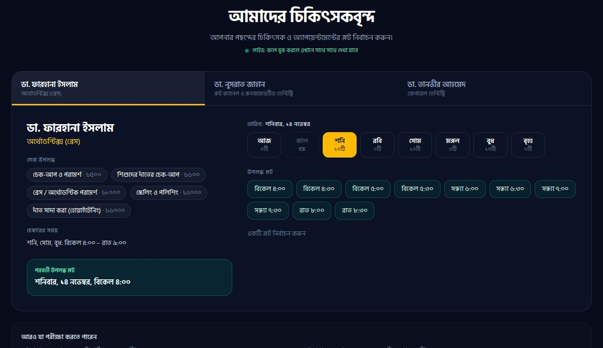

What it does
Small clinics in Bangladesh miss calls after hours and during busy chambers. Kotha AI answers in natural, Bangladeshi-style Bangla, finds a real free slot, books it, and later lets the same caller move or cancel it. Every call shows up in a staff portal with its transcript, an English translation and the extracted details.
Engineering decisions
- Speech recognition chosen by measurement. On 50 clips of Bangladeshi names, Azure
bn-BDwith a list of about 200 common names got 48 right; the alternative split names into ordinary words. The weaker provider stays as an automatic fallback. - Correctness lives in the database, not the prompt. Bookings go through Postgres functions, and an exclusion constraint makes overlapping appointments impossible even under concurrent calls. Each treatment blocks the doctor for its real length.
- The model is never trusted with facts it can get wrong. Times, dates and phone read-backs are generated in code; the agent reads back the full booking before confirming, and the portal shows what the database did, not what the model claimed.
- Every provider has a fallback, and silent failures are caught. A watchdog notices when speech recognition goes quiet without raising an error and replaces the session in about 0.1 s.
- Tested like a phone system. Scripted live-audio callers ran every flow against both the local and the deployed agent; three bugs were found and fixed that way.

Sounding Bangladeshi
Language models default to Kolkata-style Bangla. The prompt is written in Bangla with Dhaka-style examples and a list of words to avoid, Bangladeshi-trained voices are used, and a small layer of code swaps the remaining giveaways before speech and pronounces doctors' titles and times the way people in Dhaka say them.
Stack
| Part | Choice |
|---|---|
| Real-time voice | LiveKit Cloud and LiveKit Agents (Python), WebRTC |
| Speech | Azure bn-BD with a name list, Deepgram Nova-3 fallback; Azure and Cartesia voices |
| Language model | Gemma 4 31B via LiveKit Inference, Groq fallback |
| Data | Supabase Postgres 17 (14 tables, row-level security, Realtime) |
| Web | Next.js 16 on Vercel, 3D VRM avatar on the landing page |
The clinic, doctors and patients in the demo are fictional. The first call after a quiet period takes about 20 seconds to connect while the free tier wakes up.